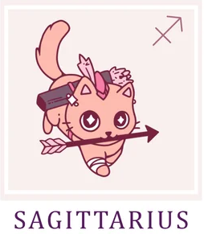

Стрелец/Sagittarius
В этом году ваши успехи будут напрямую зависеть от приложенных усилий. Это время, когда судьба вознаграждает
трудолюбивых и деятельных. Так что ваш главный девиз на ближайшие двенадцать месяцев — «Не лениться!». Если
будете следовать этому простому правилу, все сложится более чем удачно. А еще очень полезным окажется ваш
знаменитый оптимизм. Старайтесь сохранять свойственное вам жизнелюбие даже в мелочах — и тогда любые цели
окажутся достижимыми.
До начала марта смело доверяйте внутреннему голосу. Интуиция будет работать без сбоев, станет надежным компасом
как в деловой сфере, так и в личных отношениях. Она поможет разглядеть неочевидные решения и подскажет наилучший
путь для их воплощения. Окружающие будут приятно удивлены, наблюдая за вашими успехами. Именно в этот период вы
можете обрести верных друзей, надежных союзников и встретить спутника жизни, если он вам нужен.
Однако расслабляться рано. С марта по июнь вас ждет настоящий марафон дел, где главным полем действий станет
карьера и бизнес. Будьте готовы к рабочим перестановкам, возможным трениям с партнерами или неожиданным
проверкам. Если в документах есть недочеты — сейчас они напомнят о себе. Но паника — ваш худший враг. Все
трудности временны и полностью поддаются контролю, если действовать быстро, собранно и разумно.
С июня по октябрь наступит долгожданная передышка — время гармонии и спокойствия. Идеальный период, чтобы
завершить все начатые проекты и сосредоточиться на личной жизни. Для одиноких Стрельцов возможны стремительные и
счастливые перемены. Те, кто уже в отношениях, смогут вывести их на новый уровень глубины и понимания. А тем,
кто давно пребывает в неопределенности, наконец-то удастся спокойно все обдумать и решить, что же для них
по-настоящему важно — сохранять связь или начать новый путь.
Последние месяцы года подарят вам прекрасную возможность проявить себя в работе и укрепить финансовое положение.
Вас ждет рост доходов и, возможно, переоценка жизненных приоритетов. Вы будете распоряжаться деньгами с
необычной для вас практичностью, избегая ненужных трат. Благодаря этому год завершится на самой позитивной ноте,
оставляя приятное чувство стабильности и уверенности в завтрашнем дне.